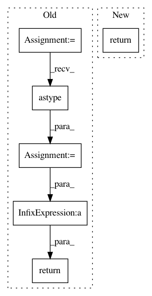

cb449d2cf71018ff385b18fe148fdfe277a2d1ea,nilearn/connectome/connectivity_matrices.py,,sym_to_vec,#,199
Before Change
return symmetric[..., tril_mask]
scaling = np.ones(symmetric.shape[-2:])
np.fill_diagonal(scaling, sqrt(2.))
tril_mask = np.tril(np.ones(symmetric.shape[-2:])).astype(np.bool)
return symmetric[..., tril_mask] / scaling[tril_mask]
def sym_matrix_to_vec(symmetric, discard_diagonal=False):
Return the flattened lower triangular part of an array.
After Change
(..., n_features * (n_features + 1) / 2) if discard_diagonal is False and
(..., (n_features - 1) * n_features / 2) otherwise.
return sym_matrix_to_vec(symmetric=symmetric, discard_diagonal=discard_diagonal)
def sym_matrix_to_vec(symmetric, discard_diagonal=False):
Return the flattened lower triangular part of an array.
In pattern: SUPERPATTERN
Frequency: 3
Non-data size: 6
Instances
Project Name: nilearn/nilearn
Commit Name: cb449d2cf71018ff385b18fe148fdfe277a2d1ea
Time: 2017-04-21
Author: salmabougacha@hotmail.com
File Name: nilearn/connectome/connectivity_matrices.py
Class Name:
Method Name: sym_to_vec
Project Name: robertmartin8/PyPortfolioOpt
Commit Name: 5e56bcc41a7d147c710e57c4c764651c7e148581
Time: 2020-04-30
Author: thomas.schmlezer@gmail.com
File Name: pypfopt/hierarchical_portfolio.py
Class Name: HRPOpt
Method Name: _get_quasi_diag
Project Name: robertmartin8/PyPortfolioOpt
Commit Name: 70b08e1d2e703b4e3d16da9aaa04706dd4413232
Time: 2020-05-01
Author: thomas.schmlezer@gmail.com
File Name: pypfopt/hierarchical_portfolio.py
Class Name: HRPOpt
Method Name: _get_quasi_diag